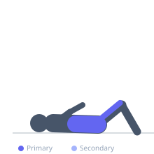
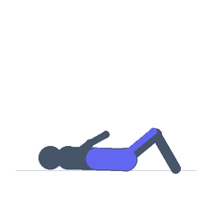

Exercise guide / Weighted Decline Sit-Up
Weighted Decline Sit-Up
The weighted decline sit-up adds external resistance — typically a weight plate held at the chest or extended overhead — to the standard decline sit-up, dramatically increasing the demand on the rectus abdominis and providing a stimulus sufficient for muscular hypertrophy. Holding the load overhead increases the lever arm and further challenges the abs throughout the movement. Progressive overload is straightforward by incrementally increasing plate weight.
Primary muscles
rectus abdominis
iliacus
psoas major
Secondary muscles
internal oblique
external oblique
Stabilizers
rectus femoris
Equipment
Adjustable Bench (Incline / Decline)
Weight Plates


Starting position
- Lie on the decline bench with feet secured. Hold a weight plate at the chest with both hands, or extend it overhead.
Setup
- Begin with a light plate (5–10 kg) held at the chest before progressing to overhead positioning. Secure feet firmly.
Steps
- Step 1: Lie fully extended on the bench, holding the plate at the chest.
- Step 2: Curl the torso upward by contracting the abs, raising the plate as the torso rises.
- Step 3: Continue until the torso is fully upright.
- Step 4: Lower slowly back to the starting position, controlling the eccentric against the added resistance.
- Step 5: For overhead variation, press the plate overhead at the top of the movement.
Coaching cues
- Squeeze the plate to maintain tension
- Control the descent — the eccentric is where the gains are
Breathing
- Exhale on the way up. Inhale on the controlled descent.
Range of motion
- Full extension at the bottom to fully upright at the top.
Tempo
- 3-1-3-0. Full eccentric control is critical with added load.
Common mistakes
- Using too heavy a load before mastering unweighted form
- Dropping quickly on the descent and losing eccentric tension
Safety
- Avoid if lumbar disc issues are present — the combination of flexion and load is contraindicated
Training
- strength: 6–12 reps
- hypertrophy: 10–15 reps
- hypertrophy: 3–4 sets
- Rest: {'hypertrophy': 90}